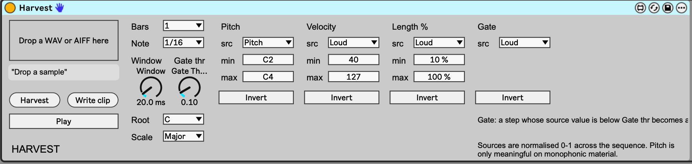

32
harvest
Sample-driven MIDI sequencer: drop in a sample and its loudness, pitch and brightness, read step by step, become a MIDI loop.

about
Drop a WAV or AIFF in and Harvest slices it into Bars x Note steps, takes a reading at the start of each step, and turns those readings into a MIDI loop, sample-and-hold style. Each target (Pitch, Velocity, Length, Gate) picks its own source, so loudness can drive pitch and brightness can drive note length. The loop plays through whatever instrument follows on the track, in time with Live, and Write clip puts it in a Session clip.
- type
- midi effect
- built by
- claude
- state
- v0.1 — awaiting test
- folder
- Harvest Device
quick start
- 01Drop
Harvest.amxdon a MIDI track in front of an instrument (User Library > Presets > MIDI Effects > Max MIDI Effect). - 02Drop a sample on the drop zone. Harvest analyses it as soon as the buffer has loaded and the status line reports how many notes it made.
- 03Set Bars and Note for the grid, then turn Play on and start Live's transport.
- 04Change a target's src menu to remap it. Every change rebuilds the notes straight away.
- 05To keep the result: highlight a Session clip slot on a MIDI track and press Write clip.
controls
sample and grid
- Drop zoneWAV / AIFF
- The sample to harvest. Analysis runs automatically when it has loaded.
- Harvestbutton
- Runs the analysis again.
- Bars1 / 2 / 4 / 8 / 16
- Loop length. Steps = Bars x 4, 8, 16 or 32 per bar, according to Note.
- Note1/4 / 1/8 / 1/16 / 1/32
- Step length. Default 1/16.
- Window1 - 500 ms
- How much of each step is analysed, from the step boundary. Short = sample-and-hold; long = averaged. Default 20 ms. Changing it re-analyses.
targets
Pitch, Velocity and Length % each have a src menu, min and max, and Invert. Gate has a source and Invert only.
- Pitch0 - 127, default 48 - 72
- Note number, quantised to Root and Scale. Default source Pitch.
- Velocity1 - 127, default 40 - 127
- Default source Loud.
- Length %2 - 400, default 10 - 100
- Note length as a percentage of one step; over 100 overlaps the next step. Default source Loud.
- Gatesource + Gate thr
- A step whose gate source is below Gate thr becomes a rest. Default source Loud.
- Inverttoggle
- Flips that target's source.
sources
All sources are normalised 0 - 1 across the sequence, so min and max always map the full range.
- Loud
- RMS level.
- Pitch
- Autocorrelation pitch, on a log scale.
- Bright
- Zero-crossing rate.
- Trans
- Attack: level just after the step boundary minus level just before.
- Noise
- 1 minus pitch clarity.
- Ramp
- Step position, rising through the loop.
- Random
- A random value per step.
pitch, playback and output
- Gate thr0 - 1
- Gate threshold. Default 0.1.
- RootC - B
- Key for the Pitch quantiser.
- ScaleMajor ... Chrom
- Major, Minor, Dorian, Mixolydian, Pentatonic major and minor, Blues, Harmonic minor, Whole tone, Chromatic.
- Playtoggle
- Plays the loop through the next device on the track. It only advances while Live's transport runs.
- Write clipbutton
- Writes the notes into the highlighted Session slot: makes a clip if the slot is empty, otherwise replaces its notes.
workflow
drum loops into melodies
Harvest a drum loop with Pitch on Loud and Gate on Trans: the hits become the rhythm and their weight becomes the line. Narrow the Pitch min and max to keep it in a usable register.
speech and field recordings
Spoken word gives lopsided, human phrasing. Try Pitch on Pitch, Length on Noise so the consonants come out short, and a longer Window to smooth it.
gotchas
- Built in a cloud session and not yet checked in Live, so treat it as untested.
- Write clip needs a Session slot highlighted on a MIDI track. It does not work in Arrangement view; the status line says so.
- If the Max window prints
harvest.js: can't find file, the copy in~/Documents/Max 9/Library/is missing. - If note lengths look wrong at tempos other than 120 bpm, the
plugsync~tempo outlet may be wired to the wrong outlet (the patch assumes outlet 5). - If Harvest or Write clip do nothing when pressed, the
live.textbuttons may not be sending 1; wiring them straight tot bfixes it.
rebuilding
python3 build_patch.py in the device folder regenerates Harvest.amxd and Harvest.maxpat. The engine is harvest.js (v8): analysis, mapping, scale quantiser, synced playback and Write to Clip.
Version 2 ideas, not built: a Probability target, a chroma pitch source for chords, ratchets, micro-timing, and Save as .mid.